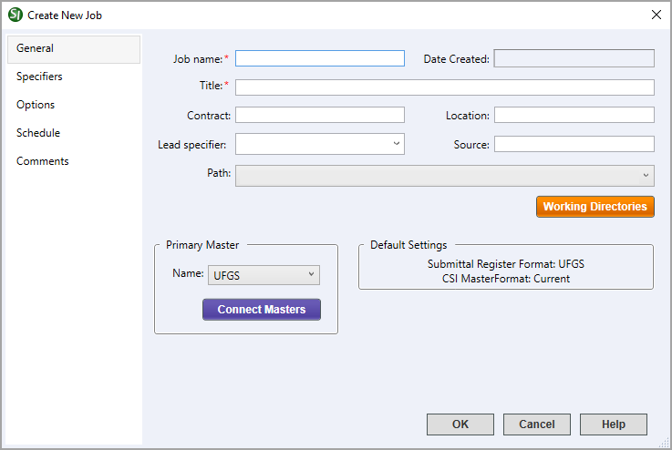

This command can also be executed from the SpecsIntact Explorer's Toolbar or by using the keyboard shortcut Ctrl+J.
The General tab is the starting point for creating a new Job, offering a central area to input essential Job-related information. This includes the Job name, Date Created, Title, Contract, Location, Lead specifier, Source, Path, Primary Master, and options to use the Working Directories button to easily add a new Working Directory or use the Connect Masters button to change the primary Master to select or add additional Masters.
 A red asterisk (*) next to a field signifies that the information must be provided.
A red asterisk (*) next to a field signifies that the information must be provided.
 When a Job is backed up, all information from these tabs, including comments, is saved in the backup file.
When a Job is backed up, all information from these tabs, including comments, is saved in the backup file.
 Click the tabbed commands on the image below to see how to use each function.
Click the tabbed commands on the image below to see how to use each function.

- Job name - Defines the primary identifier that appears in the SpecsIntact Explorer and Windows File Explorer. This is a mandatory field that is limited to 16 characters and can only consist of letters, numbers, hyphens, and underscores. For consistent appearance, Job names will be displayed in uppercase and printed at the top right corner of each Section within the Job.
- Date Created - Automatically displays the system-generated date and time recorded when the Job is created.
- Title - Provides additional descriptive context and is a required companion to the Job name. It is limited to 64 characters and should be entered in either uppercase or title case.
- Contract - Provides the option to record the specific contract number linked to this Job. The number will be consistently included on the Submittal Register whenever it is printed, published, or exported.
- Location - Provides the option to record the physical location where the facility will be constructed.
- Lead specifier - Provides the option to identify the primary specifier responsible for this Job. You can either directly type in the name or select from a pre-existing list created and managed on the Specifiers tab.
- Source - Provides the option to capture the source of the specifications when the Job is created (e.g., UFGS May 2024, district or regional Master).
- Path - Automatically displays the Working Directory path or provides the option to select a new Working Directory from the list.
- Working Directory button - Opens the Working Directories window, where you can easily add a new Working Directory for the Job.
- Primary Master - Provides the option to use the default Master selected during installation, or select a different Master from the available list.
- Connect Masters button - Opens the Connect Masters window, allowing you to manage your Master files. This allows you to easily select additional Masters, broaden your search by scanning directories beyond the current Working Directory, and even designate a new Primary Master for the Job.
- Default Settings - Automatically displays the pre-selected default configuration for new Job creation, specifically the UFGS Submittal Register format and the current CSI MasterFormat version. To ensure seamless operation with legacy data, the system implements backward compatibility when pre-unification projects are opened, the Submittal Register Format will accurately reflect its historical source and format (e.g., UFGS, Army, NASA, or Navy).
Standard Windows Commands
 The OK button will execute and save the selections made.
The OK button will execute and save the selections made.
 The Cancel button will close the window without recording any selections or changes entered.
The Cancel button will close the window without recording any selections or changes entered.
 The Help button will open the Help Topic for this window.
The Help button will open the Help Topic for this window.
Additional Learning Tools
 Watch all of the eLearning modules within Chapter 2 - Creating a Job and Adding Sections.
Watch all of the eLearning modules within Chapter 2 - Creating a Job and Adding Sections.